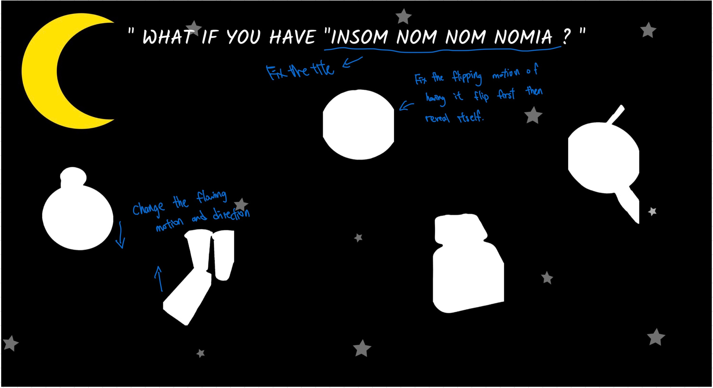
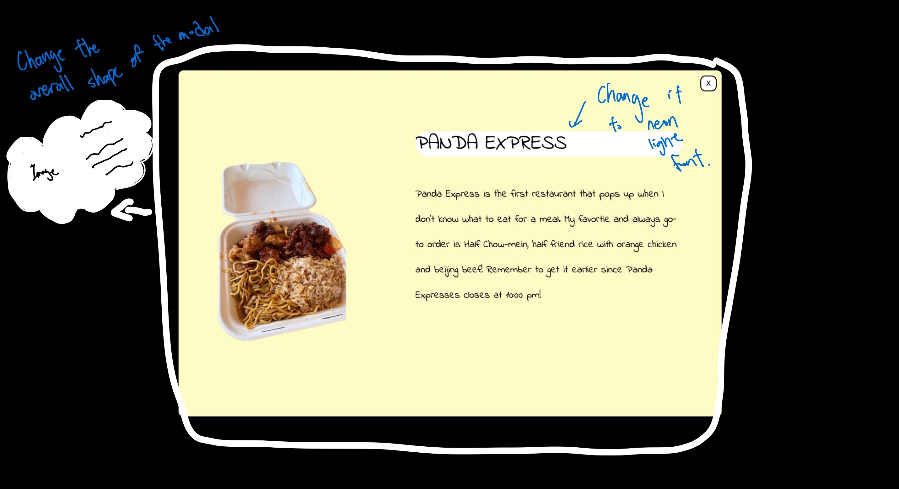

Who critiqued my work?
Firstly, Rheiana Mirazen Cuevas critiqued my work. She is a design major, focusing on UX/UI design and interactive media. She also work as a graphic designer. She also took all of the classes in the Interactive Media series (DES 117, DES 157A, DES 157B) last year making her qualified in giving opinions about design.
Secondly, on of my friend Josephine critiqued my work. She is a design computing major that graduted from University of Melbourne and she has expereince in designing and creating several website. She is now an intern at a start-up company in Taiwan.
Design critique notes:
Rheiana:
- When mouse hovers, each image could expand in size too to have more interactions when the users click on it.
- All of the floating images have the same flowing motion, so you can change up each image’s flowing direction.
- To enhance your theme of late night, you could add Neon lights that demonstrate the timing to show it’s late at night. Also, you can possibly make the title in the modal like the neon lights.
- You could consider adding the days of the week, Monday, Tuesday, and assign it into each food to make it more engaging and interesting for the users to explore.
- You can make the title in the modal same with the font of the main title on the first page to make it consistent.
Josephine:
- e suggested that the border of my modal looks too formal, I could make the border of the modal into a cloud shape to further match my late-night theme.
- If possible, she suggested I can add minor animation on the stars at the background, so when the users hover over the stars, they shimmer a bit, but don’t have big motion to prevent chaos and messiness.
- In terms of the Modal, I could switch up my current light yellow background with a more late-night themed background.
Image marked with improvements:

